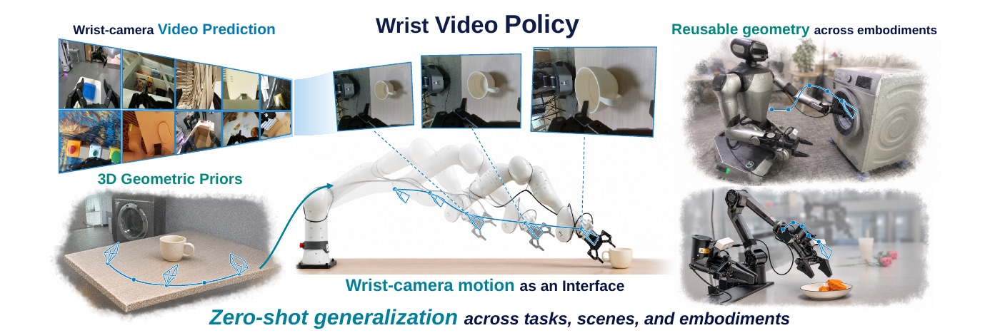
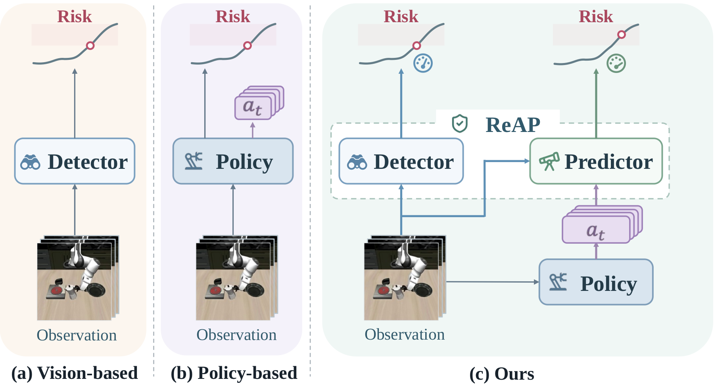
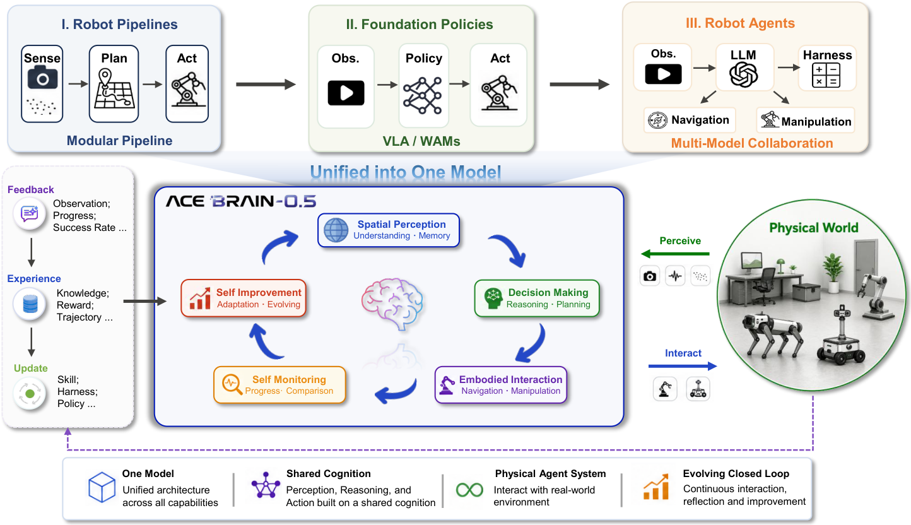

ACE-CaP-0: Real-World Code-as-Policies in the Era of Experience
arXiv preprint arXiv:2611.16872, 2026
ACE-CaP-0 combines demonstrations on request and simulation on demand to develop reusable robot programs for real-world manipulation.
ABOUT
Hi there! I’m Jingyuan, currently an undergraduate student at Fudan University. I work on vision-language-action models, reward modeling and reinforcement learning for robotics, world models for manipulation, and continual, self-improving robot learning. My long-term vision is to develop general-purpose and trustworthy robots that can perform a wide range of everyday tasks, continually adapt in new environments, and operate reliably and safely in the real world.
Outside of research, I’m also a big fan of football and baseball!
RESEARCH
arXiv preprint arXiv:2611.16872, 2026
ACE-CaP-0 combines demonstrations on request and simulation on demand to develop reusable robot programs for real-world manipulation.

arXiv preprint arXiv:2611.31079, 2026
Wrist Video Policy combines future wrist-view prediction with 3D geometric motion estimation to execute manipulation tasks across robot embodiments. Model stitching estimates wrist-camera motion directly from predicted video latents.

arXiv preprint arXiv:2610.16309, 2026
ReAP is a policy-decoupled runtime monitoring framework that combines visual failure detection with action-conditioned future-risk prediction in a failure-relevant latent space.

arXiv preprint arXiv:2607.04426, 2026
ACE-Brain-0.5 develops a unified foundation model for physical agentic AI, bringing perception, reasoning, action, feedback, and self-improvement into one embodied system.